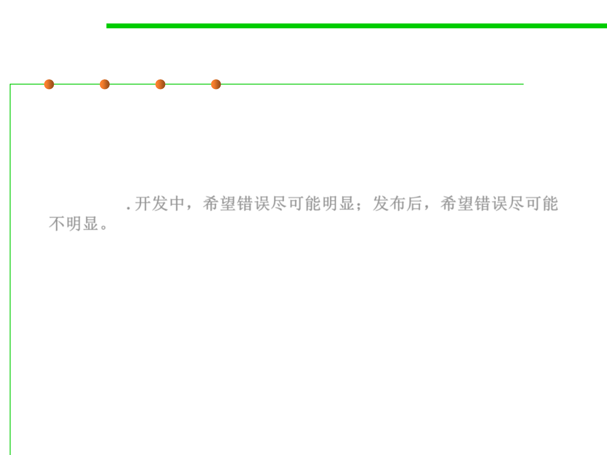

7.3 Assertions and Defensive Programming
Determining How Much Defensive Programming to Leave in
Production Code?
▪ One of the paradoxes of defensive programming is that during
development, you’d like an error to be noticeable.
▪ But during production, you’d rather have the error be as
unobtrusive as possible, to have the program recover or fail
gracefully. 开发中，希望错误尽可能明显；发布后，希望错误尽可能
不明显。
▪ Some guidelines for deciding which defensive programming tools
to leave in your production code and which to leave out: